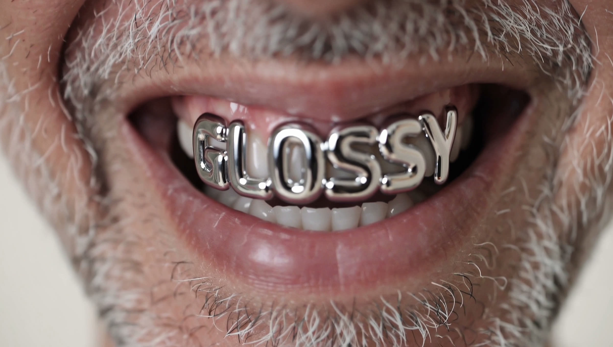
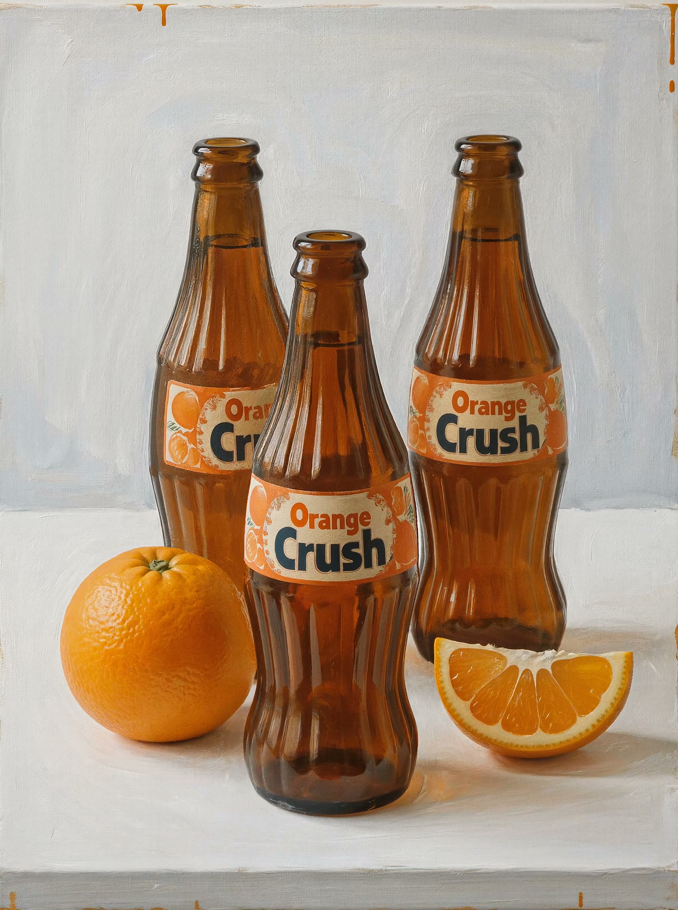
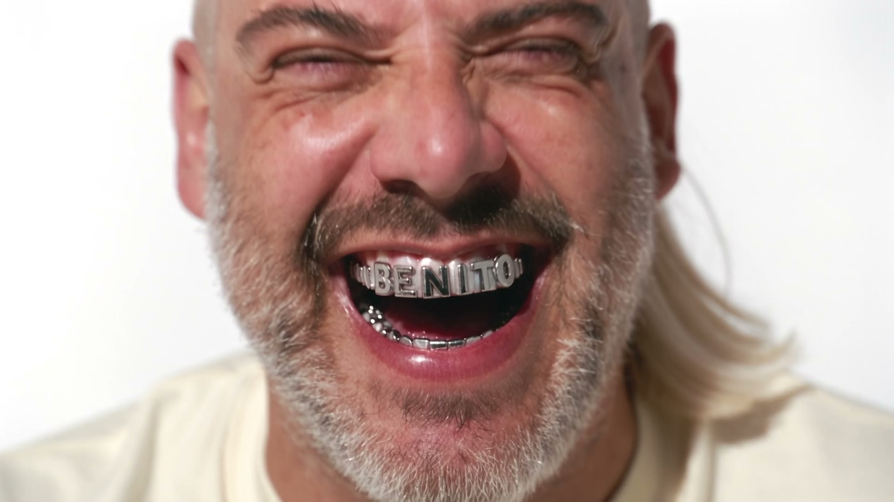

AI Consultancy · October 2026
FLUX 3 Image Has No Benchmark Yet. We Tested It Anyway.
Black Forest Labs launches its third generation. The leaderboards are still silent. Our eyes are not.
Benito doesn't need a camera. He has grillz, a platinum mullet and a laugh you can hear all the way to Freiburg. He also doesn't exist. He was made with FLUX 3 Image and brought to life with Seedance 2.5.
What is FLUX 3?
Black Forest Labs, the Freiburg lab behind FLUX, announced FLUX 3 on 23 July 2026: one multimodal model trained jointly on images, video and audio (VentureBeat). FLUX 3 Image followed on 1 October through the BFL API. On 15 October came the open weights of FLUX 3 Image Klein: 5.6 billion parameters, runs from 8 GB of VRAM, free for commercial use below 5 million dollars in annual revenue (VentureBeat).
On paper: native 4K (about 16 megapixels), up to 10 reference images, layout control with bounding boxes and web grounding switched on by default. A 1K image costs 0.048 dollars, a 4K image 0.607 dollars (Kingy AI).
And the benchmarks?
There aren't any yet. At the time of writing FLUX 3 Image does not appear on the Artificial Analysis or Arena text-to-image and editing leaderboards. The top spots there belong to GPT Image 2.5 (1197 Elo), Nano Banana 2 (1125) and Seedream 5.0 Pro (1081). FLUX.2 [max] sits at 1021.
What does exist comes from BFL itself: internal tests in which Klein beats other open models, and a 91 Elo gain in text-to-image over FLUX.2 [klein] 9B. Interesting, but not independent. Even the video figures (93% preference over Luma Ray 3.2, 52% over Seedance 2.0) are labelled by BFL as a preliminary evaluation.
So we did what we always do.
We looked. No Elo score tells you whether an image is right for your brand. Typography that is actually legible, skin that doesn't turn to plastic, light that comes from somewhere: you only see it when you try it yourself.
The images below are 4K frames from FLUX 3, rendered through Krea. FLUX 3 is one model for image and video: we had it shoot static, locked-off takes and picked the sharpest frame. What struck us: short words and display type come out sharp and correctly spelled almost every time. Skin, chrome and acrylic feel photographed, not rendered. And the range is wide: the same model does a 1990s yearbook portrait, a loose oil painting and a torn-paper collage. In earlier tests, small text in reflections was still the weak spot, as with every model.
Our advice
Don't pick a model from a leaderboard. Pick it for what your brand needs, and test it with your own brief. Want to know which model fits your visual language? An intake at Glossy is free.



Book a free intake and we test the model that fits your visual language.